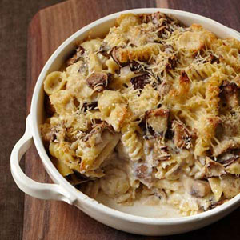

Step 3: In the same bowl you used for the bread, add the sliced garlic, chopped bacon and thyme leaves, then tear over the mushrooms, leaving any little ones whole. Crumble in the dried chilli, then use your hands to toss everything together and get all those wonderful flavours going.
